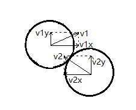

看得见的算法
跟着慕课网的老师学习，用Java Swing所做的几个小demo，《看得见的算法》课程地址链接：[点击这里]
第一章、碰撞的小球
1、 创建一个JFrame窗体
1 | public class CircleFrame extends JFrame { |
启动类：将窗体的创建放进java.awt的事件队列中。(我自己也不是很明白，讲解的老师说官方推荐这样做)
1 | public class Main { |
运行
2、为JFrame添加JPanel画布
1 | public class CircleFrame extends JFrame { |
继续运行main方法
3、使用Graphics2D进行绘图
1 | public class CircleFrame extends JFrame { |
Graphics2D相关接口：
4、整理绘制工具类CircleHelper.java
1 | public class CircleHelper { |
使用工具类进行绘制：
1 | public class CircleFrame extends JFrame { |
BasicStroke相关参数：
5、抗锯齿和双缓存
抗锯齿
抗锯齿原理：
java中打开抗锯齿：
1 |
|
开启抗锯齿前后效果对比：
更多java抗锯齿处理相关api请自行查阅java官方文档
双缓存
首先需要了解单缓存的原理和缺点
单缓存
单缓存中，一块屏幕只对应一个画布，画布的内容会投影给屏幕。画布在每次绘制内容时，都会先清空画布原有的所有内容，再对内容进行重新绘制。因此在两次绘制间隔会有一段空白，就会造成屏幕的“闪烁”现象。

双缓存技术
原理：一块屏幕对应了两个画布，当画布进行绘制，首先并不会清空内容，而是由另一块画布绘制下一次内容的状态。在绘制的过程中，第一块画布一直会投影给屏幕，等到第二块画布绘制完成后，第一块画布取消投影，由第二块画布将绘制好的内容投影给屏幕。然后第一块画布接着绘制下一状态的内容，同时第二块画布会一直投影给屏幕…这样交替绘制交替投影，从而消除单缓存的缺点。
java中开启双缓存其实非常简单，为我们的画布类添加构造方法，再在构造方法中调用父类构造方法将参数设置为true就行。
1 | private class CircleCanvas extends JPanel { |
抗锯齿和双缓存技术主要是计算机图形学的范畴，想要深入学习的同学建议网上查阅相关资料，自行了解。
6、动画基础：绘制运动的小球
6、1 首先需要建立小球数据
创建Circle.java
1 | public class Circle { |
6、2 将Circle的数据传递给CircleFrame，使窗体能够对小球的数据进行绘制。
在CircleFrame.java中设置一个新的成员属性和方法，然后在画布类的paintComponent方法的具体绘制处实现对每一个小球的绘制逻辑
1 | public class CircleFrame extends JFrame { |
6、3 在启动类中进行Circle数据和窗体大小的初始化，在事件队列中进行对窗体的渲染和数据更新。
1 | public static void main(String[] args) { |
6、4 启动程序后发现的错误及解决方法
启动程序
发现程序并未能向我们预计的那样正确运行，首先是窗体并未绘制出小球，其次我们想点击窗体的关闭按钮来关闭窗体也做不到，程序被卡死。
产生错误的原因：
我们在一开始将窗体的创建放进了一个事件队列中，而在java程序中，这个事件队列处理的不光是窗体的创建这一个事件，还有许多其他的事件。而我们现在在这个事件队列中放入一个了while (true) {…}的死循环，这个死循环的事件相对于其他事件来说是一个无穷无尽的事件，也就会造成事件中的阻塞现象。也是此次程序卡死的原因。
解决方案：
将这个死循环抽取出来放进一个线程中。
1 | EventQueue.invokeLater(() -> { |
再次运行程序：
成功解决~。
7、球与球之间的碰撞
为完成小球之间的碰撞问题，我们需要了解小球碰撞后各自的运动轨迹和速度，这涉及到中学的物理知识，为进一步方便让我们便于理解，我们将模型化至最简，即不考虑摩擦力、小球本身的旋转方向、小球的质量（在本模型中所有的小球质量都相等）、能量无损失等因素。
我们设小球1碰撞前的速度为$v_1$，小球2碰撞前的速度为$v_2$，根据动量守恒和动能守恒，可得方程组：

解得：
将两个小球碰撞后的速度 $v_1’$ 和 $v_2’$ 分解到小球对应速度的$x$和$y$方向上：
对此，我们也就可以写出相应的代码了：
1 | public class Circle { |
把这段代码放到move方法中进行调用：
1 | // 多传进来一个Circle数组，对每一个Circle进行小球之间的碰撞检测 |
与此同时我们也得修改main方法中调用的move方法：
1 | // ...保持不变 |
运行代码：
成功~~
8、解决小球初始生成位置的一点小BUG
在我们的程序中，我们的小球在初始生成的时候，会出现一点小BUG，看起来挺尴尬的：
解决方案：
我们先来看我们生成小球初始位置的算法：
1 | int x = (int) ((Math.random() * (sceneWidth - 2 * R)) + R); |
这样子可能会导致两次生成的x，y靠的比较近，也就是会产生小球相交的情况。
为避免这个现象，我们现在将整个画布分成 棋盘格 的形式
为每一个格子做一个标记，有小球置为true，没有则置为false。
1 | boolean[][] isCircle = new boolean[sceneWidth/(2*R)][sceneHeight/(2*R)]; // 初始都默认为false |
现在在画布随机生成一个坐标(m,n)，用这个坐标除以单元格的长度，可以得到这个坐标位于第几个格子里，也就小球生成的格子所在。
1 | int m = (int) (Math.random() * sceneWidth) / (2 * R); |
对(m,n)这个格子进行判断，如果有则重新生成新的随机坐标，没有则把小球放在这个格子，isCircle[m][n]置为true，并计算小球的圆心坐标也就是格子正中心的位置。
1 | x = m * (R + R) + R; |
整体代码：
1 | public class Main { |
这样，两个小球在最开始生成的时候就不会出现重叠的情况了。
9、MVC结构设计
在上面的例子中，我们的main方法要处理的逻辑实在有点多，看起来很乱，层次结构不是很清晰。因此我们把main方法中的逻辑都抽取出来，放进一个单独的类里面。
1 | public class CircleVisualizer { |
这样我们在main方法中只要声明宽高，小球数量，在实例化CircleVisualizer类就可以了。
1 | public class Main { |
在本案例中：
CircleVisualizer类负责处理数据的变化，充当了MVC中的Controller层
CircleFrame类负责绘制图像，将图像呈现给用户，充当了MVC中的View层
Circle类（实际上应该是Circle[]）就是MVC中的Model层
将程序分为以上三层，不仅让代码结构变得清晰，而且可以让我们后续的算法可视化程序中套用该模板。
10、添加交互事件
在本案例中我们还是采用内部私有类的方式来实现键盘和鼠标的交互事件。
添加键盘事件
添加键盘事件的方式有两种：
一是实现KeyListener接口
1 | public class CircleVisualizer { |
二是继承KeyAdapter类
1 | public class CircleVisualizer { |
实现接口就必须要重写该接口定义的所有方法，而我们只需要重写keyReleased这个方法，因此选择继承KeyAdapter类来实现键盘交互事件。
在本案例中，我们按下键盘的空格键让所有运动的小球都变得停止，再次按下让小球继续运动。代码实现如下：
1 | public class CircleVisualizer { |
添加鼠标事件
添加鼠标事件和键盘事件一样，我们选择内部私有类继承MouseAdapter类。
在窗体中，我们点击一个小球改变其颜色，再次点击还原其颜色
1、 获取鼠标点击的位置
System.out.println(e.getPoint()); // 获得鼠标点击位置
由于窗体标题栏和边框的干扰，我们用e.getPoint()获取到的坐标往往不是我们想要的坐标，因此要进行微调，用e.translatePoint(int x,int y)方法进行调整，具体调整的数值要根据自己的情况来调整。
1 | private class CircleMouseListener extends MouseAdapter { |
2、判断鼠标点击的位置是否在一个小球内
1 | public class Circle { |
1 |
|
3、修改CircleFrame里面的绘制小球代码部分
根据小球的isFilled属性进行绘制
1 | public class CircleFrame extends JFrame { |
4、运行结果
11、抽取MVC模板
View层：ObjectFrame.java
1 | public class ObjectFrame extends JFrame { |
Controller层：ObjectVisualizer.java
1 | public class ObjectVisualizer { |
Model层：Object.java
1 | public class Object { |
辅助工具类：ObjectHelper.java
1 | public class ObjectHelper { |
模板记得单独保存一下，后面的程序都会套用该模板。
12、第一章结束，下一章再见：）
至此，我们用Java Swing模拟一个小球碰撞的场景就算完成了。
不过我们的程序依旧存在着bug，比如，让程序运行一会，还是有可能会在小球碰撞过程中出现相交的情况。
一是由于采用int型来获取两小球之间的距离，产生了精度丢失
int d = (int) Math.sqrt((x - another.x) * (x - another.x) + (y - another.y) * (y - another.y));
二是由于计算机绘制的速度过快，导致小球在还未进行碰撞检测前就已经交织在一起了。
有兴趣的同学不妨自己去思考怎么解决这个问题，希望大家多多加油！！